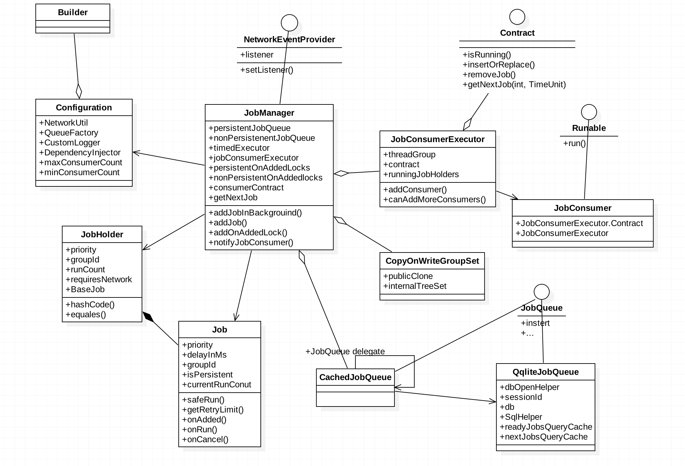

本文主要分析及调研开源项目android-priority-jobqueue的基本原理及知识点，目的为更加深入的了解安卓平台后台
Android Priority Job Queue 一、JobQueue是什么？
Priority Job Queue is an implementation of a Job Queue specifically written for Android
出自github：android-priority-jobqueue
可看出JobQueue是一个处理后台任务的控件，比AsyncTask的多任务调度能力要强，默认的缓存队列由数据库存储，
JobQueue = 线程池+线程调度优化+定时任务
二、基本使用方法 考虑到资源共享，JobQueue推荐以单例形式存在，在起第一次调用或者程序入口添加JobQueue的初始化。
1, 代码地址
1
2
3
4
5
6
7
8
9
Gradle : compile 'com.path:android-priority-jobqueue:1.1.2'
Maven:
<dependency>
<groupId> com.path</groupId>
<artifactId> android-priority-jobqueue</artifactId>
<version> 1.1 .2 </version>
</dependency>
2，初始化代码
1
2
3
4
5
6
7
8
9
10
11
12
13
14
15
16
17
18
19
20
21
22
23
24
25
26
27
28
29
30
31
32
33
34
35
Configuration.Builder builder = new Configuration.Builder(this )
.customLogger(new CustomLogger() {
private static final String TAG = "zhangphil job" ;
@Override
public boolean isDebugEnabled() {
return true ;
}
@Override
public void d(String text , Object ... args) {
Log.d(TAG, String .format(text , args));
}
@Override
public void e(Throwable t, String text , Object ... args) {
Log.e(TAG, String .format(text , args), t);
}
@Override
public void e(String text , Object ... args) {
Log.e(TAG, String .format(text , args));
}
@Override
public void v(String text , Object ... args) {
}
})
.minConsumerCount(1 )
.maxConsumerCount(3 )
.loadFactor(3 )
.consumerKeepAlive(120 );
jobManager = new JobManager(builder.build());
3，定义一个需要执行的任务
1
2
3
4
5
6
7
8
9
10
11
12
13
14
15
16
17
18
19
20
21
22
23
24
25
26
27
28
29
30
public class PostTweetJob extends Job
public static final int PRIORITY = 1 ;
private String text;
public PostTweetJob (String text)
super (new Params(PRIORITY).requireNetwork().persist());
}
@Override
public void onAdded ()
}
@Override
public void onRun () throws Throwable
webservice.postTweet(text);
}
@Override
protected boolean shouldReRunOnThrowable (Throwable throwable)
}
@Override
protected void onCancel ()
}
}
4，添加到执行器，合适的时机，onRun方法会在后台调用。
1
jobManager.addJobInBackground(new PostTweetJob (status));
三、主要类结构 